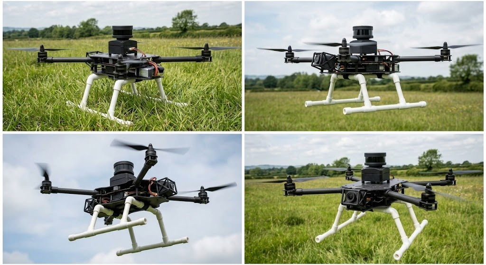

PRJ-01Aeronautics · Sep 2025 – Jan 2026

Dassault UAV Challenge
- Context
- Dassault Aviation's 12th UAV Challenge; ENSAM team of 12.
- Problem
- Build a competition-ready drone from scratch, with autonomous GPS waypoint navigation and real-time obstacle avoidance.
- Role
- Co-head of the project and head of artificial intelligence.
- Result
- Two AI modules (detection, danger assessment) validated on a live video stream; carbon-reinforced PLA chosen for the arms after a beam-theory study.